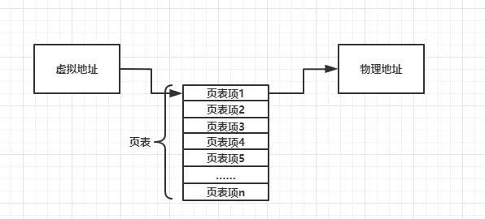
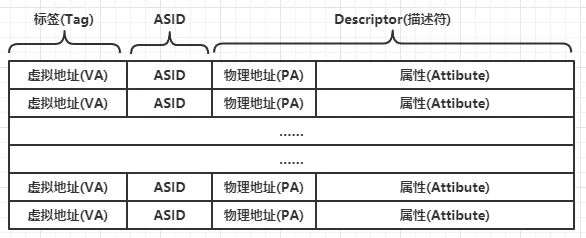
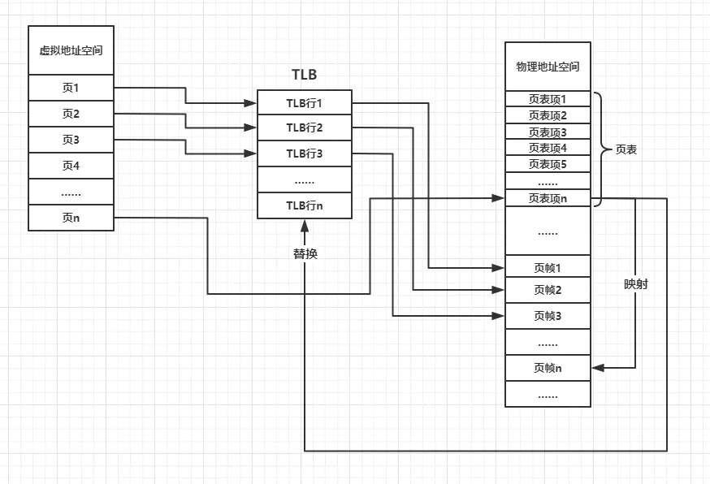
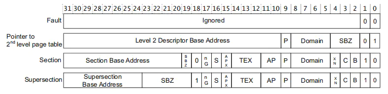
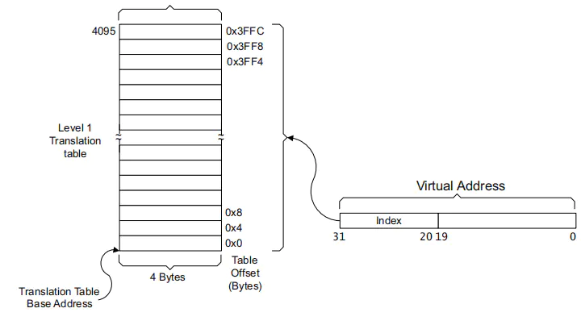
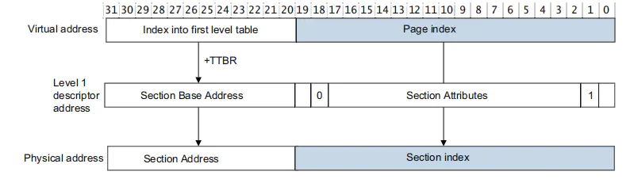
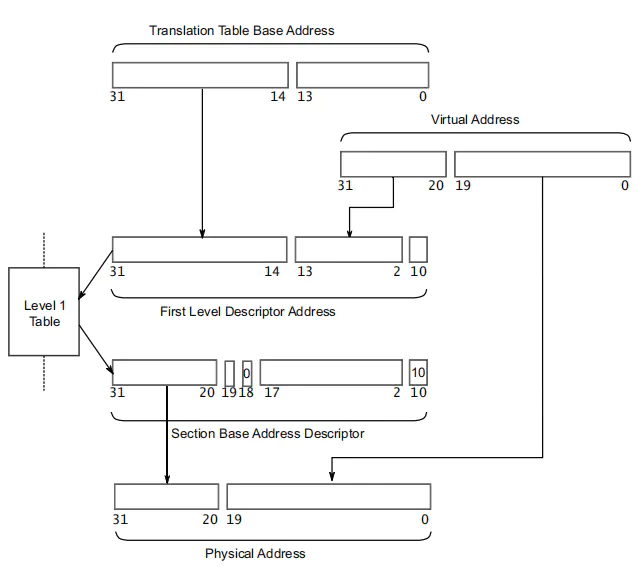
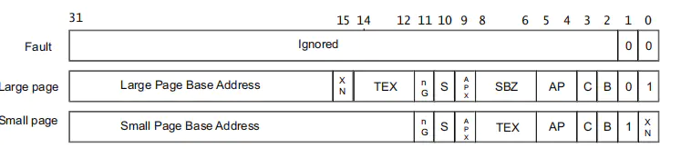
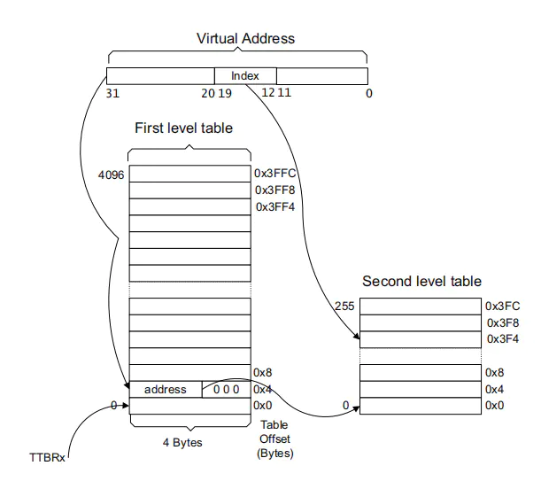
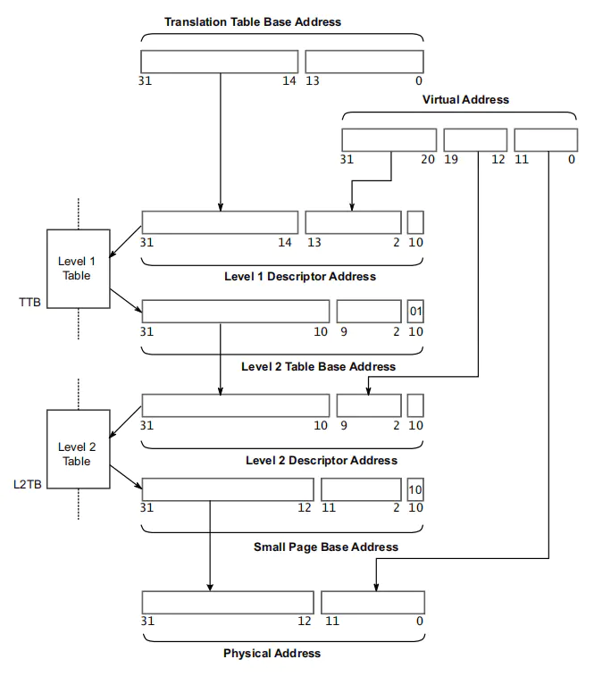

3.2.4.1. ARM体系MMU
MMU全称为Memory Management Unit，即内存管理单元。在带有MMU的嵌入式linux中，CPU访问的地址都是虚拟地址，而MMU负责将程序中代码或者数据的虚拟地址翻译为物理地址。在 执行期间，MMU会自动转换CPU发出的虚拟地址，无法人工进行操作，只需要配置好MMU相关属性即可
虚拟地址是在编译和链接时定义的，可以简单的理解为有链接器和链接器脚本指定虚拟地址。除了翻译虚拟地址,MMU还可以配置内存区域的各项配置，如内存区域的访问权限，内存区域是否 使能cache等功能
3.2.4.1.1. MMU基本概念
3.2.4.1.1.1. 页
MMU管理虚拟地址空间时，是按照页为单位来进行管理，在ARMv7的MMU，页大小共有16M(super section)、1M(section)、64k(large page)、4k(page)。页大小可以通过协处理器CP15进行配置， 越小的页意味着内存的颗粒度越小，内存使用时的浪费也会越小，但也意味着使用的TLB行越多。
3.2.4.1.1.2. 页帧
因为虚拟地址空间需要有对应的物理地址，这样才能在虚拟地址中存储数据，所以MMU管理物理地址空间时，按照页帧为单位进行管理，其大小分为64k或者4k，一段虚拟地址空间有可能存在多个 页，这些页对应着多个页帧.页和页帧时不同地址空间下关于内存空间大小的概念
3.2.4.1.1.3. 页表及页表项
MMU在进行地址空间转换时，需要一些信息，存放这些信息的表就是页表。每个页表的最小单位就是页表项。页表存储在物理地址空间中，且一个页表项对应着一个页。在切换页表时，通过将页表的物理 首地址设置到协处理器CP15中的TTBR寄存器(Translation Table Base Register), 此后MMU会通过该地址自动去物理地址空间中找到对应的页表，从而完成虚拟地址到物理地址的映射。
在不考虑TLB和多级页表的情况下，可以简单的如下图所示

3.2.4.1.1.4. TLB
TLB全称为Translation lookaside buffer, 即旁路转换缓冲，它是MMU的cache，用于临时存放虚拟地址到物理地址映射所需要的信息。TLB访问步骤如下
CPU访问虚拟地址到MMU
MMU根据规则查看虚拟地址是否在TLB中
如果在TLB中，则称为TLB命中，从TLB中直接获取物理地址对内存进行访问
如果不在TLB中，则称为TLB失效，此时MMU将进行translation table walking,即通过访问页表来获取物理地址，并将该虚拟地址的信息存入TLB，以便下次使用
TLB由许多TLB行组成，如下图所示

TLB行由3个部分组成，分别为标签，ASID和描述符
标签: 该部分由虚拟地址的一部分bit组成，MMU通过将虚拟地址的一部分bit和TLB的所有标签对比进行搜索
ASID: 全称为Address Space ID，一般用于多进程系统
描述符: 由2个部分组成，分为物理地址(一部分bit)和内存区域属性组成。可以理解为cache中的数据
一般情况下，切换进程时会切换页表，因为随着进程的切换，虚拟地址到物理的映射已经改变，此时需要清理TLB来保持TLB一致性，清理TLB一般通过协处理器CP15来完成， 在linux内核中，有flush_tlb_all()和flush_tlb_range()函数来完成该工作
MMU组成

3.2.4.1.2. MMU工作过程
ARMv7下的MMU具有2级页表，分为1级页表和2级页表。
3.2.4.1.2.1. 一级页表
1级页表也称主页表和段页表，下面简称L1页表，它将4GB的地址空间划分为4096个1MB大小的段，每个段的地址为32bit,所以1级页表拥有4096个32bit的页表项,支持4种内存大小， 16M/1M的称之为段，64k/4k称之为页
备注
存放在TTBR寄存器的地址需要16k对齐
一级页表项一共有4种格式，如下图所示

每种格式都由物理地址部分+属性部分组成，各种格式的含义如下
1Mb段转换页表项(section)，映射到1MB的物理地址范围，其物理地址部分即为所需要映射的物理基地址
物理地址部分指向2级页表的物理基地址
16MB段转换页表项，是一种特殊的1MB段转换页表项，其物理地址部分即为所需要映射的物理基地址
无效页表项,当访问该页表项时，将触发指令取指异常或者取数据异常
一级页表转换
以1MB段举例，假设L1页表的物理地址为0x12300000,现有一个虚拟地址0x00100000,其转换过程如图所示


查表过程：将虚拟地址高12bit,即0x001乘以4得到0x004, 0x004即为该虚拟地址所在段的页表项在页表中的偏移，所以该虚拟地址对应的页表项的物理地址为0x12300000+0x004=0x12300004
根据查到的页表项，将页表项高12bit和虚拟地址底20bit结合即为该虚拟地址在该1Mb段内的物理地址
完整的转换过程如下

3.2.4.1.2.2. 二级页表
2级页表一共有256个4字节大小的页表项，总共1kb大小的内存空间，L2页表的大部分内容与L1页表类似
二级页表项
二级页表项一共有3种格式，如下图所示

粗页表项: 其物理地址部分指向64kb大小的物理基地址
细页表项: 其物理地址指向4kb大小的物理基地址
无效页表项，当访问该页表项时，将触发取指或者取数据异常
二级页表转换
L2页表的转换过程与L1页表的转换过程类似，以4kb为例，如下图所示

转换步骤如下
通过虚拟地址找出L1页表项并转换为L2页表的基地址
根据L2页表基地址并集合虚拟地址的[19:12]bit找出虚拟地址对应的L2页表项
将虚拟地址[11:0]bit和L2页表项的物理地址部分结合得出具体的物理地址
完整转换过程如下

3.2.4.1.3. MMU内存属性
3.2.4.1.3.1. 内存区域权限
每个内存区域都有自己的权限，不符合权限的访问都会引发异常，如果是数据访问则引发数据异常，如果是指令访问，且该指令再执行期间都没有被flush，将 引发预取指异常，引发异常的原因将会被设置在CP15的the fault address and fault status registers
内存区域权限由AP、APX和Domain共同控制
3.2.4.1.4. 操作系统如何使用页表
3.2.4.1.4.1. 进程与MMU
操作系统会为每个进程分配一个页表，该页表使用物理地址存储。当进程使用类似malloc等需要映射代码或数据的操作时，操作系统会在随后马上修改页表以加入新的物理内存。 当进程完成退出时，内核会将相关的页表项删除，以便分配给新的进程。
备注
当使能MMU之后，CPU直接寻址虚拟地址，而MMU负责虚拟地址到物理地址的转换和翻译工作，地址转换和翻译的依据是页表。页表项的内容是由操作系统负责填充的。如果下一级 页表的基地址是虚拟地址，那么MMU还需要查询另外一个页表才能找到这个虚拟地址对应的物理地址，这样MMU就会陷入死循环，所以这里下一级页表的基地址采用的是物理地址。
关于页表的遍历，MMU会遍历页表，linux内核也会遍历页表，如通过 walk_pgd 、 __create_pgd_mapping 、 follow_page 等函数。通过MMU遍历页表比较容易理解，
MMU从页表基地址寄存器得到了PGD页表(L0页表)基地址的物理地址，然后从虚拟地址中得到每级页表的索引值，从而找到对应的页表项，页表项中存储了下一级页表的物理基地址，
以此类推，很容易遍历整个页表。但是站在软件的视角，linux内核的pgd_t, pud_t, pmd_t, pte_t数据结构中并没有存储指向下一级页表的指针。
//arch/arm64/include/asm/pgtable-types.h
typedef u64 pteval_t;
typedef u64 pmdval_t;
typedef u64 pudval_t;
typedef u64 pgdval_t;
typedef struct { pteval_t pte; } pte_t;
#define pte_val(x) ((x).pte)
#define __pte(x) ((pte_t) { (x) } )
#if CONFIG_PGTABLE_LEVELS > 2
typedef struct { pmdval_t pmd; } pmd_t;
#define pmd_val(x) ((x).pmd)
#define __pmd(x) ((pmd_t) { (x) } )
#endif
#if CONFIG_PGTABLE_LEVELS > 3
typedef struct { pudval_t pud; } pud_t;
#define pud_val(x) ((x).pud)
#define __pud(x) ((pud_t) { (x) } )
#endif
typedef struct { pgdval_t pgd; } pgd_t;
#define pgd_val(x) ((x).pgd)
#define __pgd(x) ((pgd_t) { (x) } )
walk_pagetable 函数是软件遍历页表的例子，它的作用是遍历进程的页表查找虚拟地址对应页表中的PTE
static pte_t *walk_pagetable(struct mm_struct *mm, unsigned long address)
{
pgd_t *pgdp = NULL;
pud_t *pudp;
pmd_t *pmdp;
pte_t *ptep;
pgdp = pgd_offset(mm, address);
if(!pgdp || pgd_none(*pgdp))
return NULL;
pudp = pud_offset(pgdp, address);
if(!pudp || pud_none(*pudp))
return NULL;
pmdp = pmd_offset(pudp, address);
if(!pmdp || pmd_none(*pmdp))
return NULL;
if((pmd_val(*pmdp) & PMD_TYPE_MASK) == PMD_TYPE_SECT)
return (pte_t *)pmdp;
ptep = pte_offset_kernel(pmdp, address);
if(!ptep || pte_none(*ptep))
return NULL;
return ptep;
}
进程的内存描述符mm_struct中PGD成员存储了该进程的PGD页表基地址的虚拟地址，因此通过pgd_offset很方便可以找到PGD页表项的虚拟地址
#define pgd_offset(mm, addr) (pgd_offset_raw((mm)->pgd, (addr)))
#define pgd_offset_raw(pgd, addr) (pgd + pgd_index(addr))
#define pgd_index(addr) (((addr) >> PGDIR_SHIFT) & (PTRS_PER_PGD - 1))
#define PTRS_PER_PGD (1 << (MAX_USER_VA_BITS - PGDIR_SHIFT))
#define MAX_USER_VA_BITS VA_BITS
#define VA_BITS (CONFIG_ARM64_VA_BITS)
#define PGDIR_SHIFT ARM64_HW_PGTABLE_LEVEL_SHIFT(4 - CONFIG_PGTABLE_LEVELS)
#define ARM64_HW_PGTABLE_LEVEL_SHIFT(n) ((PAGE_SHIFT - 3) * (4 - (n)) + 3)
#define PAGE_SHIFT CONFIG_ARM64_PAGE_SHIFT
// CONFIG_ARM64_PAGE_SHIFT在.config中定义，一般为CONFIG_ARM64_PAGE_SHIFT=12
// CONFIG_PGTABLE_LEVELS在.config中定义，一般为CONFIG_PGTABLE_LEVELS=4
// CONFIG_ARM64_VA_BITS在.config中定义，一般为CONFIG_ARM64_VA_BITS=48
备注
比较难理解是Linux内核如何查找到下一级页表基地址的虚拟地址，因为pgd_t数据结构中并没有存储下一个指针来指向下一级页表的虚拟地址
在linux内核中，物理内存会线性映射到内核空间中，偏移量为PAGE_OFFSET，在内核空间中可以很方便的实现虚拟地址到物理地址映射的转换。linux提供了两个宏，其中 __pa 用于
根据内核中线性映射的虚拟地址计算对应的物理地址。而 __va 宏用于根据内核线性映射中物理地址计算对应的虚拟地址
#define pud_offset(dir, addr) ((pud_t *)__va(pud_offset_phys((dir), (addr))))
#define pud_offset_phys(dir, addr) (pgd_page_paddr(READ_ONCE(*(dir))) + pud_index(addr) * sizeof(pud_t))
static inline phys_addr_t pgd_page_paddr(pgd_t pgd)
{
return __pgd_to_phys(pgd);
}
#define __pgd_to_phys(pgd) __pte_to_phys(pgd_pte(pgd))
#define __pte_to_phys(pte) (pte_val(pte) & PTE_ADDR_MASK)
//arch/arm64/include/asm/memory.h
#define __pa(x) __virt_to_phys((unsigned long) (x))
#define __va(x) ((void *)__phys_to_virt((phys_addr_t) (x)))
#define __phys_to_virt(x) ((unsigned long)((x) - PHYS_OFFSET) | PAGE_OFFSET)
在PGD页表项中存储了指向下一级页表基地址的物理地址，因此通过__va宏，可以快速把物理地址转换成内核空间的虚拟地址。从而找到下一级页表基地址的虚拟地址